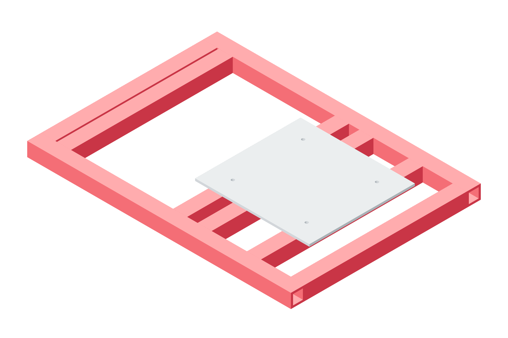

Dry commissioning / rotation176 / 179
Track repeated dry rotator laps
Fresh observations correct a smooth learned phase trajectory. The existing rotator pedal and controller remain independent.
AddNo new parts
Tools / setupRegistered tube seam · accepted local model · rotator pedal · paired observations

- Register this tube's seam and a fixed table fiducial or characterized phase encoder on the observation timeline.
- Start at the rotator's accepted 8 mm/s dry speed and preserve its pedal behavior.
- Learn phase-indexed feedforward from repeated laps, then reserve subsequent laps for held-out evaluation.
- Log achieved residual and uncertainty, feature visibility, observe/move/settle delay, saturation and every abort.
Dry rotation scope
No laser emission or wire feeding is authorized by this guide. Live optical protection, detection uncertainty, deterministic process interlocks and weld development require their own physical acceptance.
Ready when
Observed tracking stays inside its accepted local workspace with measured correction authority and recoverable fault behavior. Visibility loss, unexplained residual, saturation or an unqualified stop path fails the dry run. Stop with the pedal and correct the model/clearance before another lap.